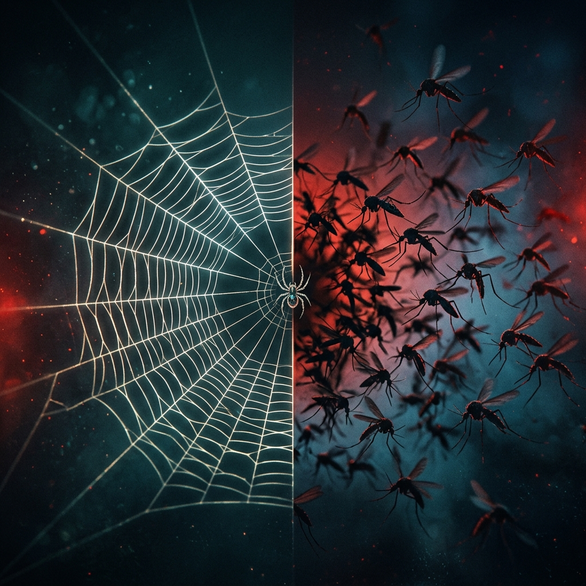

Sociologija Rizika i Straha
Zašto se bojimo pauka, a ne komaraca? Zašto se nuklearke čine strašnijima od ugljena? Odgovore ne treba tražiti u biologiji – nego u društvu koje oblikuje naše percepcije.
Pauk vs. Komarac: Tko je zapravo opasniji?
Arahnofobija (strah od pauka) je jedna od triju najčešćih fobija na svijetu. Ali pogledajmo stvarne podatke...
Pauk
Strah od pauka toliko je raširen da evolucijski psiholozi raspravljaju je li to urođena reakcija naslijeđena od predaka.
Komarac
Komarac je najsmrtonosnija životinja na Zemlji – ubija više ljudi godišnje nego sve ostale životinje zajedno, uključujući ljude i morske pse.
Zašto je to tako? Sociološko pitanje
Ako su pauk i komarac toliko različiti po stvarnoj opasnosti, a mi se bojimo pogresnog – to znači da naš strah nije racionalna kalkulacija rizika, nego društveni konstrukt. Upravo to proučava sociologija rizika i straha.
Tri sociološke perspektive na rizik i strah
Funkcionalizam
"Percepcija rizika je neophodna za funkcioniranje društva."
Funkcionalistička perspektiva tvrdi da društvo uglavnom točno percipira realne rizike – i da je to korisno. Zajednički strah od bolesti, katastrofa ili kriminala pokreće kolektivnu akciju: grade se bolnice, vatrogasci, zakoni o sigurnosti. Bez percepcije rizika, ne bi bilo ni društvene organizacije za zaštitu.
Konfliktna teorija
"Percepcija rizika je oruđe kontrole masa."
Konfliktna perspektiva gleda tko ima moć definirati što je opasno. Elite, države i korporacije strateški konstruiraju ili minimiziraju percepciju određenih rizika prema vlastitom interesu. Prestrašena masa traži zaštitu i predaje kontrolu vladajućima – čime se učvršćuje postojeći poredak moći.
Interakcionizam
"Rizik je ono što zajednički odlučimo da jest."
Interakcionisti promatraju kako se percepcija rizika gradi kroz svakodnevne interakcije, priče i simbole. Što mediji prikazuju kao „opasno", postaje opasno u kolektivnoj imaginaciji – neovisno o statistici. Značenja rizika nastaju mikro-razinom, razgovorima, pričama i kulturnim narativima.
Sociologija Straha: Strahovi su Društveni Konstrukti
Ulrich Beck, njemački sociolog, uveo je 1986. pojam „Društvo rizika" (Risikogesellschaft) – ideju da moderno društvo ne samo da proizvodi rizike, nego ih i percipira i komunicira na društveno uvjetovan način.
Ulrich Beck
„Risikogesellschaft", 1986.
Rizici su globalni i nevidljivi
Za razliku od opasnosti prošlosti (poplave, glad), moderni rizici (zagađenje, nuklearno oružje, klimatske promjene) su nevidljivi i globalni. Nitko ih ne može „vidjeti" ni kontrolirati samostalno.
Definicija rizika je politička
Tko odlučuje što je „prihvatljiv rizik"? Stručnjaci, vlade, korporacije – svi imaju interes. Percepcija rizika nije neutralna: ona odražava distribuciju moći u društvu.
Strah postaje politička sila
Kad društvo percipira nešto kao opasno – to ima realne posljedice (zakoni, protesti, investicije). Strah oblikuje stvarnost, čak i kad nije opravdan podacima.
Frank Furedi
„Culture of Fear", 1997. / „How Fear Works", 2018.
„Nismo postali opasniji svijet. Postali smo društvo koje je naučilo biti prestrašeno."
— Frank Furedi
Strah je odvojen od stvarnih opasnosti
Furedi tvrdi da suvremeni strahovi nemaju empirijsku osnovu – nisu proporcionalni stvarnim rizicima, nego su kulturno konstruirani. Živimo sigurnije nego ikad, a osjećamo se ugroženije nego ikad.
Kolaps moralnog autoriteta → strah kao zamjena
Tradicija i religija nekad su davali ljudiokvir vrijednosti i sigurnosti. Kad su ti okviri erodirali u modernom društvu, strah je zauzeo njihovo mjesto – postaje nova moralna kategorija koja dijeli „sigurno" od „opasnog".
Kultura ranjivosti i „niske očekivanje"
Društvo počinje ljude tretirati kao inherentno krhke i ranjive. Djeca su preopasno okružena, odrasli su „žrtve traume", svuda vrebaju rizici. Furedi to naziva „kulturom niskih očekivanja" – ne vjerujemo da ljudi mogu podnijeti izazove.
Politizacija straha
Političari, mediji i interesne grupe strateški koriste strah kao alat mobilizacije. Prijetnje se preuveličavaju, prikazuju kao nekontrolabilne i neuhvatljive – jer prestrašen građanin traži zaštitu od države.
Predznismo i zatvorenost prema budućnosti
Moderno društvo je „prezentističko" – okrenuto samo sadašnjosti, bez nade u kolektivnu budućnost. Imaginacija postaje zarobljena u najgorim mogućim scenarijima, što vodi pasivnosti i eroziji zajedništva.
Jaz između percipiranog i stvarnog rizika
* Postoci su relativni i ilustrativni; prikazuju veličinu percepcijskog jaza, a ne apsolutne vrijednosti smrtnosti.
☢️ Nuklearna energija vs. 🏭 Fosilna goriva
Koji energetski izvor je zapravo opasniji za ljude? Podaci govore suprotno od naše percepcije.
prognoziranih dugoročnih smrtnih slučajeva od raka (UN, 2005.)
direktnih smrtnih slučajeva od zračenja
smrtnih slučajeva globalno u 2021. (UNICEF/WHO)
☢️ Zašto se bojimo nuklearne energije?
Nevidljivost: Radioaktivno zračenje ne možemo osjetiti ni vidjeti – izaziva „efekt strave"
Mediji: Černobil i Fukushima – spektakularne katastrofe koje su decenijama u kolektivnoj memoriji
Hladni rat: Atomska bomba → asocijacija nuklearno = uništenje civilizacije
Gubitak kontrole: Nitko od nas nije „odabrao" živjeti pored nuklearke – nameće se bez pristanka
🏭 Zašto ignoriramo fosilna goriva?
Normalizacija: Dim iz auta i tvornica vidimo svakodnevno – mozak ga klasificira kao „normalno"
Moć lobbying-a: Naftne kompanije troše milijarde na PR kampanje koje umanjuju percepciju rizika
Difuzne žrtve: Zagađenje ubija sporo i „nevidljivo" – nema jedne katastrofalne slike, nema vijesti
Ekonomski interesi: Fosilna goriva su baza globalnog gospodarstva – „preskupo" ih je se bojati
Sociološki zaključak
Naši strahovi od nuklearne energije su 90 puta veći nego što statistika opravdava, a ignoriranje fosilnih goriva odgovara interesima moćnih korporacija koji oblikuju javni diskurs.
Ovo je savršen primjer zašto je sociologija rizika važna: percipiorani rizici su društveno uvjetovani, a ne nužno racionalni. Tko kontrolira priču o tome što je opasno – kontrolira politiku, zakone i novčane tokove.
🤖 Aktualni Strahovi: Hoće li nas AI zamijeniti?
Umjetna inteligencija (AI) savršen je poligon za testiranje sociologije rizika u 21. stoljeću. Zašto toliko strahujemo od tehnologije koju smo sami stvorili? Primijenimo naše tri teorijske perspektive na strah od AI-ja:
Strah od gubitka kontrole nad inteligencijom potiče nas na akciju. Baš zato što društvo percipira rizik, donose se zakoni poput EU AI Acta, osnivaju se etička povjerenstva i uvode regulative. Strah nas tjera da tehnologiju integriramo na siguran način.
Pravi rizik često nije apokaliptični „Terminator", nego rastuća nejednakost. Dok tehnološke elite gomilaju kapital, radnici gube poslove. Zanimljivo je da iste te elite ponekad same potenciraju mistične strahove ("AI će uništiti svijet!") kako bi odvratile pozornost javnosti od sasvim konkretnog rizika – monopolizacije moći i bogatstva.
Kako uopće doživljavamo softver koji „misli"? Naš strah oblikovan je desetljećima pop-kulture i znanstvene fantastike (Matrix, Odiseja 2001, Black Mirror). Naša procjena rizika rijetko počiva na čitanju koda, a najčešće na kulturalnim narativima o strojevima koji se otimaju kontroli.